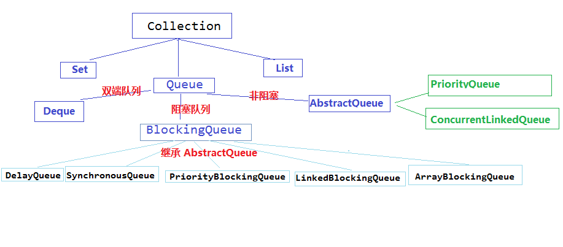

队列简述
Queue：基本上，一个队列就是一个先入先出（FIFO）的数据结构。
Queue 接口与 List、Set 同一级别，都是继承了 Collection 接口。LinkedList 实现了 Deque接口。
在并发队列上 JDK 提供了两套实现，一个是以 ConcurrentLinkedQueue 为代表的高性能队列非阻塞，一个是以 BlockingQueue 接口为代表的阻塞队列，无论哪种都继承自 Queue 接口。
阻塞队列与非阻塞队列
阻塞队列与普通队列的区别在于，当队列是空的时，从队列中获取元素的操作将会被阻塞，或者当队列是满时，往队列里添加元素的操作会被阻塞。试图从空的阻塞队列中获取元素的线程将会被阻塞，直到其他的线程往空的队列插入新的元素。同样，试图往已满的阻塞队列中添加新元素的线程同样也会被阻塞，直到其他的线程使队列重新变得空闲起来，如从队列中移除一个或者多个元素，或者完全清空队列。

非阻塞队列
没有实现的阻塞接口的 LinkedList：实现了 java.util.Queue 接口 和 java.util.AbstractQueue 接口。
内置的不阻塞队列：PriorityQueue 和 ConcurrentLinkedQueue。
PriorityQueue 和 ConcurrentLinkedQueue 类在 Collection Framework 中加入两个具体集合实现。
PriorityQueue 类实质上维护了一个有序列表。加入到 Queue 中的元素根据它们的天然排序（通过其 java.util.Comparable 实现）或者根据传递给构造函数的 java.util.Comparator 实现来定位。
ConcurrentLinkedQueue 是基于链接节点的、线程安全的队列。并发访问不需要同步。因为它在队列的尾部添加元素并从头部删除它们，所以只要不需要知道队列的大小，ConcurrentLinkedQueue 对公共集合的共享访问就可以工作得很好。收集关于队列大小的信息会很慢，需要遍历队列。
ConcurrentLinkedQueue：是一个适用于高并发场景下的队列，通过无锁的方式，实现
了高并发状态下的高性能，通常 ConcurrentLinkedQueue 性能好于 BlockingQueue。它
是一个基于链接节点的无界线程安全队列，该队列的元素遵循先进先出的原则，头是最先
加入的，尾是最近加入的，该队列不允许 null 元素。
ConcurrentLinkedQueue 的重要方法:
add() 和 offer() 都是加入元素的方法（在 ConcurrentLinkedQueue 中这俩个方法没有任何区别）。
poll() 和 peek() 都是取头元素节点，区别在于前者会删除元素，后者不会。
ConcurrentLinkedQueue 例子：
1 | @RequestMapping("test-clq") |
1 | 结果： |
阻塞队列（BlockingQueue）
阻塞队列，即：BlockingQueue，首先它是一个队列，通过一个共享的队列，可以使得数据由队列的一端输入，从另外一端输出。
常用的队列主要有以下两种：（当然通过不同的实现方式，还可以延伸出很多不同类型的队列，DelayQueue 就是其中的一种）
- 先进先出（FIFO）：先插入的队列的元素也最先出队列，类似于排队的功能。从某种程度上来说这种队列也体现了一种公平性。
- 后进先出（LIFO）：后插入队列的元素最先出队列，这种队列优先处理最近发生的事件。
多线程环境中，通过队列可以很容易实现数据共享，比如经典的“生产者”和“消费者”模型中，通过队列可以很便利地实现两者之间的数据共享。假设我们有若干生产者线程，另外又有若干个消费者线程。如果生产者线程需要把准备好的数据共享给消费者线程，利用队列的方式来传递数据，就可以很方便地解决他们之间的数据共享问题。但如果生产者和消费者在某个时间段内，万一发生数据处理速度不匹配的情况呢？理想情况下，如果生产者产出数据的速度大于消费者消费的速度，并且当生产出来的数据累积到一定程度的时候，那么生产者必须暂停等待一下（阻塞生产者线程），以便等待消费者线程把累积的数据处理完毕，反之亦然。然而，在 concurrent 包发布以前，在多线程环境下，我们每个程序员都必须去自己控制这些细节，尤其还要兼顾效率和线程安全，而这会给我们的程序带来不小的复杂度。好在此时，强大的 concurrent 包横空出世了，而他也给我们带来了强大的 BlockingQueue。（在多线程领域：所谓阻塞，在某些情况下会挂起线程（即阻塞），一旦条件满足，被挂起的线程又会自动被唤醒）
阻塞队列（BlockingQueue）是一个支持两个附加操作的队列。这两个附加的操作是：
- 在队列为空时，获取元素的线程会等待队列变为非空。
- 当队列满时，存储元素的线程会等待队列可用。
阻塞队列常用于生产者和消费者的场景，生产者是往队列里添加元素的线程，消费者是从队列里拿元素的线程。阻塞队列就是生产者存放元素的容器，而消费者也只从容器里拿元素。
BlockingQueue 队列，从阻塞这个词可以看出，在某些情况下对阻塞队列的访问可能会造成阻塞。被阻塞的情况主要有如下两种：
- 当队列满了的时候进行入队列操作。
- 当队列空了的时候进行出队列操作。
因此，当一个线程试图对一个已经满了的队列进行入队列操作时，它将会被阻塞，除非有另一个线程做了出队列操作。同样，当一个线程试图对一个空队列进行出队列操作时，它将会被阻塞，除非有另一个线程进行了入队列操作。
在 Java 中，BlockingQueue 的接口位于 java.util.concurrent 包中（在 Java 5 版本开始提供），由上面介绍的阻塞队列的特性可知，阻塞队列是线程安全的。
在新增的 java.util.concurrent 包中，BlockingQueue 很好的解决了多线程中如何高效安全“传输”数据的问题，通过这些高效并且线程安全的队列类，为我们快速搭建高质量的多线程程序带来极大的便利。
下表显示了 jdk 1.5 中的阻塞队列的操作：
| 方法名 | 描述 |
|---|---|
| add | 增加一个元索，如果队列已满，则抛出一个 IIIegaISlabEepeplian 异常 |
| remove | 移除并返回队列头部的元素，如果队列为空，则抛出一个 NoSuchElementException 异常 |
| element | 返回队列头部的元素，如果队列为空，则抛出一个 NoSuchElementException 异常 |
| offer | 添加一个元素并返回 true，如果队列已满，则返回 false |
| poll | 移除并返问队列头部的元素，如果队列为空，则返回 null |
| peek | 返回队列头部的元素，如果队列为空，则返回 null |
| put | 添加一个元素，如果队列满，则阻塞 |
| take | 移除并返回队列头部的元素，如果队列为空，则阻塞 |
ArrayBlockingQueue
ArrayBlockingQueue 是一个有边界的阻塞队列，它的内部实现是一个数组。有边界的意思是它的容量是有限的，我们必须在其初始化的时候指定它的容量大小，容量大小一旦指定就不可改变。
ArrayBlockingQueue 是以先进先出的方式存储数据，最新插入的对象是尾部，最新移出的对象是头部。
LinkedBlockingQueue
LinkedBlockingQueue 阻塞队列大小的配置是可选的，如果我们初始化时指定一个大小，它就是有边界的，如果不指定，它就是无边界的。说是无边界，其实是采用了默认大小为 Integer.MAX_VALUE 的容量，它的内部实现是一个链表。
和 ArrayBlockingQueue 一样，LinkedBlockingQueue 也是以先进先出的方式存储数据，最新插入的对象是尾部，最新移出的对象是头部。
PriorityBlockingQueue
PriorityBlockingQueue 是一个没有边界的队列，它的排序规则和 java.util.PriorityQueue 一样。需要注意：PriorityBlockingQueue 中允许插入 null 对象。
所有插入 PriorityBlockingQueue 的对象必须实现 java.lang.Comparable 接口，队列优先级的排序规则就是按照我们对这个接口的实现来定义的。
另外，我们可以从 PriorityBlockingQueue 获得一个迭代器 Iterator，但这个迭代器并不保证按照优先级顺序进行迭代。
SynchronousQueue
SynchronousQueue 队列内部仅允许容纳一个元素。当一个线程插入一个元素后会被阻塞，除非这个元素被另一个线程消费。
DelayQueue
DelayQueue（基于 PriorityQueue 来实现的）是一个存放 Delayed 元素的无界阻塞队列，只有在延迟期满时才能从中提取元素。该队列的头部是延迟期满后保存时间最长的 Delayed 元素。如果延迟都还没有期满，则队列没有头部，并且 poll 将返回 null。当一个元素的 getDelay(TimeUnit.NANOSECONDS) 方法返回一个小于或等于零的值时，则出现期满，poll 就以移除这个元素了，此队列不允许使用 null 元素。
一个例子，使用 BlockingQueue 模拟生产者与消费者：
1 | // 生产者 |
1 | // 消费者 |
1 | // 测试 |
1 | 结果： |